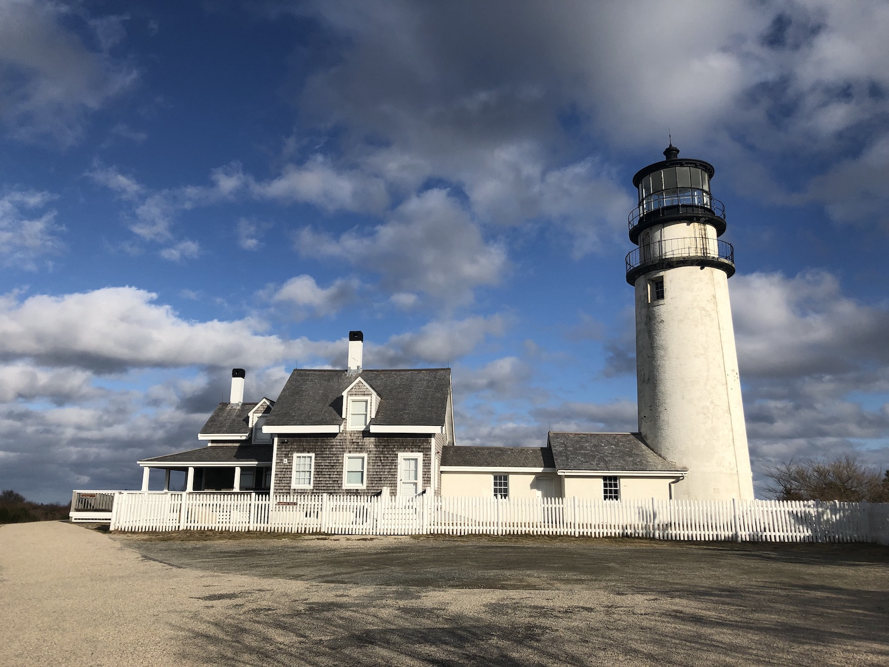

That rock is rotating around its axis at ~1000 miles per hour to give us 24 hours in a single day!
So how have I been spending my time?

I grew up in a small shoreline town in Connecticut
After playing a variety of sports, meeting some of my best friends, and graduating, I shipped out to Massachusetts Maritime Academy.
The regimented lifestyle was different but I learned invaluable life lessons, sailed around South America, and played collegiate lacrosse.

Fast-forward, I transferred back to my home state and studied at The University of Connecticut.
Through persistence and hard work, I qualified for the Computer Science & Engineering program.
Fast forward countless trials and tribulations...
My closest friends and I ended up winning UConn Senior design with an unfunded, muscle & android controlled, 3D printed prosthetic arm, we named Hydra.
I successfully graduated a B.S. in Computer Science and Engineering.

Shortly after graduating I moved down to North Carolina for a full time job writing web software.
There I met some incredible people, explored the beautiful blue mountains, and the ever familiar East coast shoreline.

Following North Carolina, I migrated up to New England to continue pursuing my passion for Software Engineering.
I was continually switching between Node.JS, Python, and PHP projects as needed.

New oportunities induced and I found myself able to turn my IoT hobbies and interests into my primary focus!
Any given day I could be writing swift, objective C, or even some C++.

I was presented with another fork in the road, chose the path less traveled and headed up to Boston.
I now find myself working for a truly amazing tight knit agency, developing quality apps at expeditious velocities. 🚀

An abundance of weird, nondeterministic, events occured for me to end up where I am today and I could not be happier.
As the Earth continues to revolve, so will my desire to teach, grow, and learn.
I can't wait to find out what happens next!